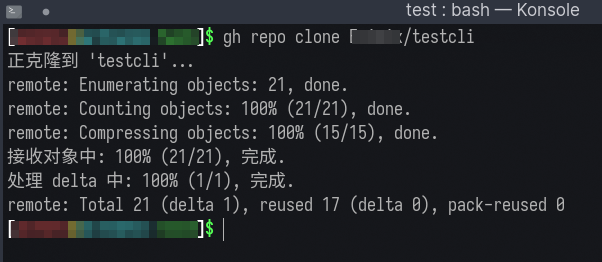
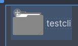
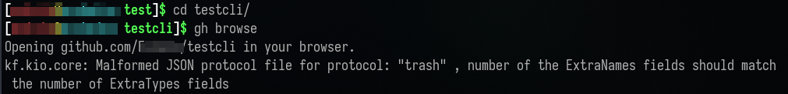
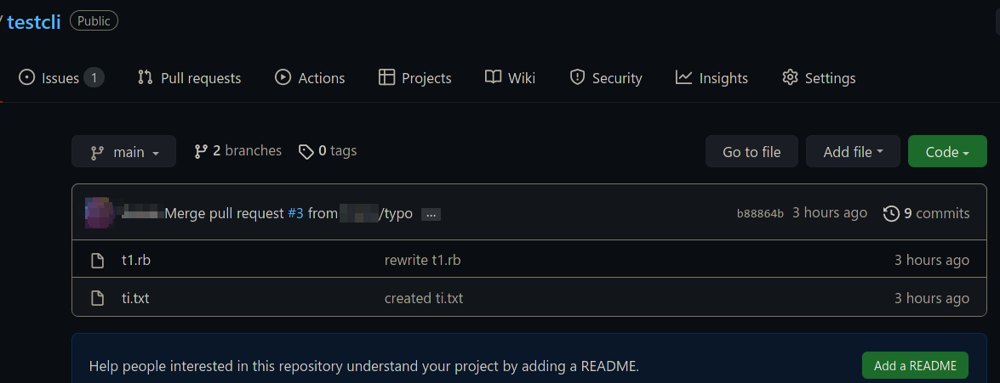
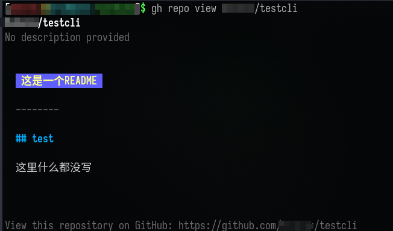
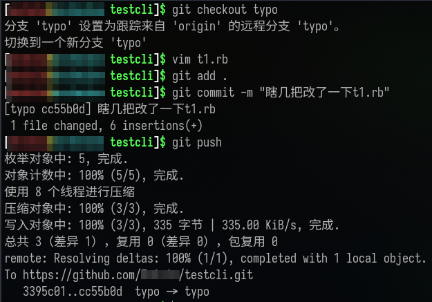
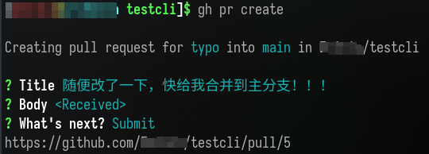
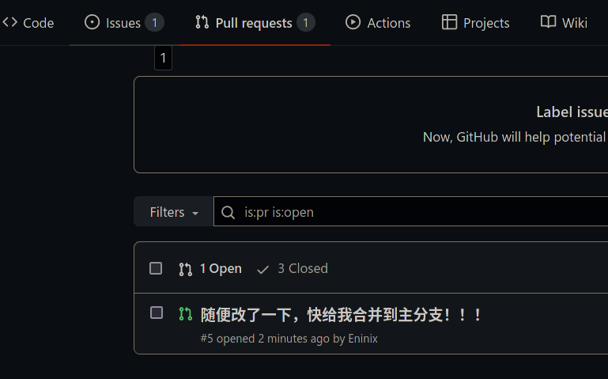
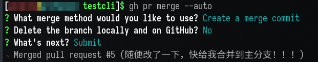

Github-Cli的使用
1.官网及下载地址与安装手段
官网：https://cli.github.com/
官方对各个系统的下载教程：https://github.com/cli/cli#installation
官方github-cli指令指南：https://cli.github.com/manual/
2.首次运行
gh auth login
执行命令后，按照提示可选择打开浏览器输入验证码进行验证登录操作，也可以选择使用私人token进行登录。注意：英语不太好的，可以使用翻译软件翻译。
在这里登录后，使用git push时，即使是https方式克隆的仓库，也可以不输入密码就进行push（这条笔者只在linux上实验过，未在网上找到其他系统的资料）
3.基础操作
3.1克隆仓库（gh repo clone）
gh repo clone 用户名/库名
使用该条命令，会在当前操作目录下，建立一个一库名命名的文件夹，即为你的github库。

3.2打开当前github库的网页
gh browse

执行完后，自动打开了我的浏览器。

3.3查看某个库的README
gh repo view 用户名/库名

4发布pull requests
4.1先在分支typo,随便改一下文件，并push

4.2使用gh pr creat创建一个pull requests

这里我们可以看到，创建了一个编号5的pr
在库主页上也可以看到:

4.3合并pull requests
可以直接在网页上操作，当然也可以使用gh pr merge命令
gh pr merge --auto

5.发布issues
操作和pr操作类似
gh issue create # 按照提示操作来创建一个issues，这里假设编号为 7
gh issue list # 列出所有issues
gh issue close 7 # 关闭 5号issues
gh issue reopen 7 # 重新打开 5号issues
gh issue comment 7 # 评论 5号issues
gh issue view 7 # 查看 5号issues内容
gh issue edit 7 # 编辑
gh issue delete 7 # 删除
gh issue status # 查看自己发布的issues
6.写在最後
常用操作大概就这些，github-cli的纯命令行操作还是很好用的。gthub-cli配合git使用还是挺方便的。
https://cli.github.com/manual/ 这里还有更多操作。不过是英语